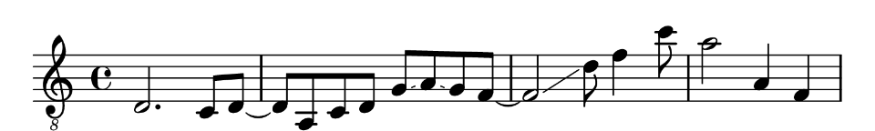

Overview
The tabr package provides a music notation syntax and a collection of music programming functions for generating, manipulating, organizing and analyzing musical information in R.
The music notation framework facilitates creating and analyzing music data in notation form; i.e, more from the perspective and in the language of a musician than, say, an audio engineer.
Citation
Matthew Leonawicz (2025). tabr: Music Notation Syntax, Manipulation, Analysis and Transcription in R. R package version 0.5.4. https://CRAN.R-project.org/package=tabr
Contribute
Contributions are welcome. Contribute through GitHub via pull request. Please create an issue first if it is regarding any substantive feature add or change.
Installation
Install the CRAN release of tabr with
install.packages("tabr")Install the development version from GitHub with
# install.packages("remotes")
remotes::install_github("leonawicz/tabr")Music data structures
It’s easiest to begin with a high level view using some basic examples.
Music data can be viewed, manipulated and analyzed while in different forms of representation based around different data structures: strings and data frames. Each representation offers advantages over the other for different use cases.
Music syntax can be entered directly and represented in character strings to minimize the formatting overhead of data entry by using simple data structures, for example when wanting to quickly enter and transcribe short pieces of music syntax in R into sheet music or tablature files. You can also enter sound and time together with the music class, and no need to repeat consecutive durations until a change.
Here is an example of making a string of pitches noteworthy and a string of combined pitch and duration into a music object. Such objects carry various musical information based on the syntax of an input string.
library(tabr)
x <- "a, c e g# a ac'e' ac'e'~ ac'e' a c' e' a'"
x <- as_noteworthy(x)
x
#> <Noteworthy string>
#> Format: space-delimited time
#> Values: a, c e g# a <ac'e'> <ac'e'~> <ac'e'> a c' e' a'
summary(x)
#> <Noteworthy string>
#> Timesteps: 12 (9 notes, 3 chords)
#> Octaves: tick
#> Accidentals: sharp
#> Format: space-delimited time
#> Values: a, c e g# a <ac'e'> <ac'e'~> <ac'e'> a c' e' a'
y <- "a,8 c et8 g# a ac'e'4. ac'e'~8 ac'e'4 at4 c' e' a'1"
y <- as_music(y)
summary(y)
#> <Music string>
#> Timesteps: 12 (9 notes, 3 chords)
#> Octaves: tick
#> Accidentals: sharp
#> Key signature: c
#> Time signature: 4/4
#> Tempo: 2 = 60
#> Lyrics: NA
#> Format: space-delimited time
#> Values: a,8 c8 et8 g#t8 at8 <ac'e'>4. <ac'e'~>8 <ac'e'>4 at4 c't4 e't4 a'1
music_split(y)
#> $notes
#> <Noteworthy string>
#> Format: space-delimited time
#> Values: a, c e g# a <ac'e'> <ac'e'~> <ac'e'> a c' e' a'
#>
#> $info
#> <Note info string>
#> Format: space-delimited time
#> Values: 8 8 t8 t8 t8 4. 8 4 t4 t4 t4 1
#>
#> $lyrics
#> [1] NA
#>
#> $key
#> [1] "c"
#>
#> $time
#> [1] "4/4"
#>
#> $tempo
#> [1] "2 = 60"Functions exist for directly performing various mathematical, logical and organizational operations and musical transformations on strings like the one above by checking their music syntax validity and adding custom classes and methods to these strings (more on this below). tabr offers special object classes that facilitate working with music data and notation in ways that are natural to R, robust, tidy, and lend themselves well to transcription as well as analysis.
Of course, none of this will work on character strings that are not “noteworthy” or “musical”, for example. Invalid, unworthy syntax is rejected early with an error, preventing corrupted music syntax from causing unexpected issues later on.
The same music data can also be organized in tidy data frames, allowing for a more familiar and powerful approach to the analysis of large amounts of structured music data.
x <- "a,8 c e r r c a, g#, a ac'e'"
as_music(x) |> as_music_df()
#> # A tibble: 10 × 14
#> duration pitch note semitone octave freq pitch_int scale_int slur slide
#> <chr> <chr> <chr> <int> <int> <dbl> <int> <chr> <chr> <lgl>
#> 1 8 a, a 57 2 110. NA <NA> <NA> FALSE
#> 2 8 c c 48 3 131. 3 m3 <NA> FALSE
#> 3 8 e e 52 3 165. 4 M3 <NA> FALSE
#> 4 8 r r NA NA NA NA <NA> <NA> FALSE
#> 5 8 r r NA NA NA NA <NA> <NA> FALSE
#> 6 8 c c 48 3 131. -4 M3 <NA> FALSE
#> 7 8 a, a 57 2 110. -3 m3 <NA> FALSE
#> 8 8 g#, g# 56 2 104. -1 m2 <NA> FALSE
#> 9 8 a a 57 3 220 13 m9 <NA> FALSE
#> 10 8 ac'e' ace 57 3 220 0 P1 <NA> FALSE
#> # ℹ 4 more variables: bend <lgl>, dotted <int>, articulation <chr>,
#> # annotation <chr>Several functions are available for mapping seamlessly between and manipulating these data structures and their representations of musical information.
Noteworthy strings
It is helpful to have a deeper understanding of how this music notation syntax informs data structures and operations integrated throughout the package.
As a quick introduction and to get oriented to the music notation syntax offered by tabr, consider the concept of a noteworthy string. This is like any other character string, except that what makes a string noteworthy is that its content consists strictly of valid tabr music notation syntax. It can be parsed unambiguously and meaningfully as input by package functions that inspect and manipulate musical information.
A bit about basic syntax
A simple character string like "c e g", or alternatively as a vector, c("c", "e", "g"), is a noteworthy string. The single lowercase letter "a" is noteworthy. So are "a_" and "a#" (flat and sharp). However, "A" is not (case sensitivity), nor is "z". Of course, as seen above, there is more valid syntax than just the lowercase musical note letters a through g and sharp and flat notation.
An important piece of syntax is the octave. In conjunction with a note, specifying a unique pitch requires the octave number, either in tick format (comma and single quote, c, c c') or integer format (c2 c c4). Octave 3 is the implicit default; there is no tick in tick format and explicitly adding the 3 in integer format is unnecessary. The pitches c d e f g a b (default octave) are the notes in the octave below middle C (c').
You’ve already seen above with the example using a music object that a noteworthy string can be one part of a more complete piece of musical information. Tick format is necessary to avoid ambiguity with respect to temporal information once two such pieces of information are merged together. For this reason, tick format is preferred in general. Tick format also matches that used by the LilyPond music engraving software, which is used by the tabr LilyPond API for anything transcription related like rendering sheet music to PDF or in R markdown documents.
For all available syntax specifications and related details see the package vignettes.
The noteworthy class
Noteworthiness can be checked on any character string. When defining noteworthy strings you can define them like any other character vector. However, you will notice that package functions that operate on noteworthy strings and whose output is another noteworthy string will yield a string with the supplemental noteworthy class. This has its own print() and summary() methods.
Several other generic methods are also implemented for the noteworthy class, making it easy to perform simple but powerful operations on these objects in a familiar way. While many functions will attempt to coerce a string to noteworthy, not all will and some methods are implemented specifically for the class.
x <- "g#, c d# g#c'd#'"
as_noteworthy(x)
#> <Noteworthy string>
#> Format: space-delimited time
#> Values: g#, c d# <g#c'd#'>
is_note(x)
#> [1] TRUE TRUE TRUE FALSE
is_chord(x)
#> [1] FALSE FALSE FALSE TRUE
chord_is_major(x)
#> [1] NA NA NA TRUE
(x <- transpose(x, 1))
#> <Noteworthy string>
#> Format: space-delimited time
#> Values: a, c# e <ac#'e'>
summary(x)
#> <Noteworthy string>
#> Timesteps: 4 (3 notes, 1 chord)
#> Octaves: tick
#> Accidentals: sharp
#> Format: space-delimited time
#> Values: a, c# e <ac#'e'>
distinct_pitches(x)
#> <Noteworthy string>
#> Format: space-delimited time
#> Values: a, c# e a c#' e'
distinct_pitches(x) |> pitch_freq() # in Hz
#> [1] 110.0000 138.5913 164.8138 220.0000 277.1826 329.6276These are just a few examples. There are many more functions in tabr that intuitively operate on noteworthy strings, abstracting the interpretation of relatively simple symbolic text specifications as quantitative and/or structured musical information.
There is also a noteinfo class, and a music class (seen above). You can learn more in the vignettes. The music class is particularly useful for efficient music data entry and basic transcription tasks.
Tidy music analysis
Ideally music data already exists in a data frame format. But if it doesn’t, or if you just wrote out a new note sequence like below, getting this data into a data frame for a more tidy approach to analysis is easy. Conversion can also populate several derivative variables in the process.
In the earlier example you saw the result of calling as_music_df() on a noteworthy string.
x <- "a, c e r r c a, g#, a ac'e'"
as_music_df(x)You may have noticed that rests (r) are allowed for timesteps and that functions that compute lagged intervals respect these gaps. Since as_music_df() was only provided with a string of pitches, there are no explicit time variables in the data frame. However, discrete timesteps still exist and they do not have to contain notes.
There are a number of derivative columns. If you are working with a large sequence of music, there is no need to carry all of these variables along through your analysis if you do not need them. They can be created using various package functions and you can build onto your data frame and transform variables later with a function like mutate() from dplyr.
library(dplyr)
x <- "a, c e r r c a, g#, a ac'e'"
tibble(pitch = as_vector_time(x)) |>
mutate(scale_int = scale_diff(pitch))
#> # A tibble: 10 × 2
#> pitch scale_int
#> <notwrthy> <chr>
#> 1 a, <NA>
#> 2 c m3
#> 3 e M3
#> 4 r <NA>
#> 5 r <NA>
#> 6 c M3
#> 7 a, m3
#> 8 g#, m2
#> 9 a m9
#> 10 ac'e' P1In fact, it’s much more powerful to create the columns according to your needs using specific functions and their various arguments. But as_music_df() is convenient and also offers some additional arguments. Adding key and scale allows for scale degrees. scale is diatonic by default but does not have to be.
x <- "g g#"
as_music_df(x, key = "am") |>
select(pitch, key, scale, scale_deg)
#> # A tibble: 2 × 4
#> pitch key scale scale_deg
#> <chr> <chr> <chr> <int>
#> 1 g am diatonic 7
#> 2 g# am diatonic NA
as_music_df(x, key = "am", scale = "harmonic_minor") |>
select(pitch, key, scale, scale_deg)
#> # A tibble: 2 × 4
#> pitch key scale scale_deg
#> <chr> <chr> <chr> <int>
#> 1 g am harmonic_minor NA
#> 2 g# am harmonic_minor 7tabr offers many functions for manipulating and analyzing music data and working in music notation. See the collection of vignettes for more information on music programming and analysis.
Transcription
Music programming in the notation syntax provided by tabr can be used for a variety of purposes, but it also integrates cohesively with the package’s transcription functions. The package also provides API wrapper functions for transcribing music notation in R into basic sheet music and guitar tablature (“tabs”) using LilyPond.
LilyPond is an open source music engraving program for generating high quality sheet music based on markup syntax. tabr generates LilyPond files from R code and can pass them to LilyPond to be rendered into sheet music pdf files. While LilyPond caters to sheet music in general and tabr can be used to create basic sheet music, the transcription functions focus on leveraging LilyPond specifically for creating quality guitar tablature. You do not need to use it for guitar tablature, but for vocal or other instrument tracks, you can change settings, such as suppressing a tab staff from your sheet music.
While LilyPond is listed as a system requirement for tabr, you can use the package for music analysis without installing LilyPond if you do not intend to render tabs. You can even use the lilypond() function to write LilyPond files to disk without the software installed, since this is only a case of R writing plain text files in the proper format. The only functions in the package that require a LilyPond installation are tab(), midily(), miditab() and any render_* functions.
Use case considerations
tabr offers a useful but limited LilyPond API and is not intended to access all LilyPond functionality from R, nor is transcription via the API the entire scope of tabr. If you are only creating sheet music on a case by case basis, write your own LilyPond files manually. There is no need to use tabr or limit yourself to its existing LilyPond API or its guitar tablature focus.
However, if you are generating music notation programmatically, tabr provides the ability to do so in R and offers the added benefit of converting what you write in R code to the LilyPond file format to be rendered as printable sheet music.
With ongoing development, the music programming side of tabr will continue to grow much more than the transcription functionality. While transcription represents about half of this introduction, this is only to provide a thorough context and overview of features. Transcription is a wonderful option to have fully integrated into the package, but it is an optional use case, and working with music data is the broader primary thrust of the package.
Why LilyPond for transcription?
LilyPond is an exceptional sheet music engraving program.
- It produces professional, high quality output.
- It is open source.
- It offers a command line access point for a programmatic approach to music notation.
- It is developed and utilized by a large community.
- Most GUI-based applications are WYSIWYG and force a greater limitation on what you can do and what it will look like after you do it. It is only for the better that
tabris the bottleneck in transcription limitations rather than the music engraving software it wraps around.
Transcription functionality and support
The tabr package offers the following for transcription:
- Render guitar tablature and sheet music to pdf or png.
- Create and insert sheet music snippets directly into R Markdown documents.
- Write accompanying MIDI files that can respect repeat notation and transposition in the sheet music (under reasonable conditions).
- Support tablature for other string instruments besides guitar such as bass or banjo.
- Support for instruments with different numbers of strings.
- Support for arbitrary instrument tuning.
- Offers inclusion (or exclusion) of formal music staves above tab staves, such as treble and bass clef staves for complete rhythm and timing information.
- If music staff is included, the tab staff can be suppressed, e.g., for vocal tracks.
- Track-specific setup for features like instrument type, tuning and supplemental music staves.
- Provides common notation such as slide, bend, hammer on, pull off, slur, tie, staccato, dotted notes, visible and silent rests.
- Allows arbitrary tuplet structure.
- Above-staff text annotation.
- Percent and volta repeat section notation.
- Note transposition.
- Staff transposition.
- Multiple voices per track and multiple tracks per score.
- Chord symbols above staff
- Chord fretboard diagrams and chord chart at top of score.
- A variety of layout control options covering settings from score attributions to font size.
- Optional alternative input format allowing the user to provide string/fret combinations (along with key signature and instrument tuning) to map to pitch.
Basic transcription example
Rendering sheet music is based on building up pieces of musical information culminating in a score. The fundamental object to consider in the transcription context is a phrase. A phrase is created from a noteworthy string and incorporates additional information, most importantly time and rhythm. It can also include positional information such as the instrument string on which a note is played. Outside of rendering tabs, there is no reason to construct phrase objects. Everything from the phrase object on up is about using the R to LilyPond pipeline to render some kind of sheet music document.
If you are doing music analysis on noteworthy strings and are combining the note, pitch or chord information with time, that can be done with a corresponding variable; using a phrase object is not the way to do that because phrase objects are intended for the construction of LilyPond markup syntax.
As a brief example, recreate the tablature shown in the image above. Here are the steps.
- Define a musical phrase with
phrase()or the shorthand aliasp(). - Add the phrase to a
track(). - Add the track to a
score(). - Render the score to pdf with
tab()or anotherrender_*function.
The code is shown below, but first some context.
Constructing a musical phrase
The term phrase here simply means any arbitrary piece of musical structure you string together. phrase() takes three main arguments when building a phrase from its component parts. The first gives pitches (or rests) separated in time by spaces. For chords, remove spaces to indicate simultaneous notes. For example, a rest followed by a sequence of pitches might be notes = "r a, c f d a f".
info is note metadata such as duration. Whole notes are given by 1, half notes by 2, quarter notes 4, and so on, e.g., info = "4 8 8 8 8 8 8" (or shorten to info = "4 8*6"). This example does not require additional information such as dotted notes, staccato notes, ties/slurs, slides, bends, hammer ons and pull offs, etc.
The third argument, string only applies to fretted string instruments and is always optional. Providing this information in conjunction with the pitch fixes the frets so that LilyPond does not have to guess them. This only applies for tablature output. Explicit string numbers are not needed for this example since lowest fret numbers (LilyPond default) are intended.
p("r a, c f d a f", "4 8*6")
#> <Musical phrase>
#> r4 <a,>8 <c>8 <f>8 <d>8 <a>8 <f>8Building a phrase from component parts may be necessary in some programmatic contexts. However, when doing manual data entry for simple, interactive examples, the music class offers a higher level of abstraction, sparing you some typing as well as cognitive load.
Music syntax
As an aside, if you are working with the music class, you can enter notes, note info, and optionally string numbers if applicable, all in one string. This is more efficient for data entry. It can also be easier to follow because it binds the otherwise separate arguments by timestep. See the vignettes and help documentation on music objects for more details.
If you define the music object
as_music("r4 a,8 c f d a f")
#> <Music string>
#> Format: space-delimited time
#> Values: r4 a,8 c8 f8 d8 a8 f8it can be passed directly to phrase(), which understands this syntax and interprets the notes argument as music syntax if the info argument is not provided (info = NULL). In fact, the music object does not even need to be previously defined. The string format can be directly provided to phrase().
(p1 <- p("r4 a,8 c f d a f"))
#> <Musical phrase>
#> r4 <a,>8 <c>8 <f>8 <d>8 <a>8 <f>8Notice how each timestep is complete within the single character string above. Also, durations (and string numbers) can repeat implicitly until an explicit change occurs.
Score metadata and accessing LilyPond
Finally, specify some score metadata: the key signature, time signature and tempo.
If LilyPond is installed on your system (and added to your system path variable on Windows systems), tab() or any of the render_* functions should call it successfully. Windows users are recommended to just add LilyPond’s bin directory to the system path. This will take care of LilyPond as well as its bundled Python and MIDI support. As an example for Windows users, if for example the LilyPond executable is at C:/lilypond-2.24.2/bin/lilypond.exe, then add C:/lilypond-2.24.2/bin to the system path.
Minimal R code example
#> #### Engraving score to phrase.pdf ####
#> GNU LilyPond 2.24.2 (running Guile 2.2)
#> Processing `./phrase.ly'
#> Parsing...
#> Interpreting music...
#> Preprocessing graphical objects...
#> Interpreting music...
#> MIDI output to `./phrase.mid'...
#> Finding the ideal number of pages...
#> Fitting music on 1 page...
#> Drawing systems...
#> Converting to `./phrase.pdf'...
#> Success: compilation successfully completedThe pdf output looks like this:

MIDI support
The package offers nominal MIDI file output support in conjunction with rendering sheet music. MIDI file writing is still handled by LilyPond, which means it must be based on a valid LilyPond file output created by tabr.
You can read MIDI files into R. This support relies on the tuneR package to read MIDI files and attempts to structure the MIDI data to integrate as best as possible with the data structures and functionality found throughout tabr.
An existing MIDI file can also be passed through directly to LilyPond to attempt to create sheet music from the MIDI file if possible, using one of LilyPond’s command line utilities for MIDI to LilyPond conversion followed by rendering the generated LilyPond file to sheet music.
References and resources
There are several vignette tutorials and examples at the tabr website.

R-Music
R for music data extraction and analysis
See the R-Music organization on GitHub for more R packages related to music data extraction and analysis.
The R-Music blog provides package introductions and examples.
Other packages
- The tuneR package for Analysis of Music and Speech by Uwe Ligges, Sebastian Krey, Olaf Mersmann, Sarah Schnackenberg, and others.
Please note that the tabr project is released with a Contributor Code of Conduct. By contributing to this project, you agree to abide by its terms.